항공기 전기계통 개요
전기계통의 3대 구성
항공기 전기계통의 주요 특징
① 항시 전원 공급 — 비행 준비~착륙 후까지 전원이 끊기지 않도록 설계
② AC + DC 병용 — 교류(모터·밸브·히터 등 대전력) + 직류(계기·지시·조정 등 소전력)
③ 이중 계통 — 정상 전원 계통(Normal) + 비상 전원 계통(Emergency)
④ 실시간 감시 — BITE 기능, 비정상 시 즉시 정지·경고
항공기 전기계통이 자체적으로 결함을 점검하고 시험할 수 있는 기능. 비정상 계통은 작동이 멈추고 조종석에 즉시 경고 표시.
항공기 전원 종류 (2.1.1)
교류 전원 (AC)
비행 중 주전원
· IDG — 엔진 구동식, 정상 비행 중 주전원
· APU Generator — 백업 / 지상 운용
· GPU / GATE 전원 — 지상 공급
표준: 115 VAC, 400 Hz, 3 phase
400Hz 사용 이유 → 같은 성능의 부품을 더 작고 가볍게 만들 수 있어 항공기 경량화에 유리
직류 전원 (DC)
· TRU (Transformer Rectifier Unit) — AC를 28VDC로 변환, 직류 주전원
· Battery Charger + Battery
소형기: 14VDC / 대형기: 28VDC
비상 전원
· Static Inverter — 배터리 DC → 115VAC 400Hz 1phase 변환
· Battery — 최후의 비상전원 (30분 이상 필수 버스 공급)
· RAT (Ram Air Turbine) — 대형기, 모든 발전기 상실 시
IDG — Integrated Drive Generator
· 정속구동장치(CSD) + 발전기(Generator)를 하나로 통합
· 엔진 RPM 변화에 무관하게 항상 400Hz 출력
· GCU(Generator Control Unit)로 상태 모니터링 및 제어
대표 LRU (전기계통 보호 및 제어)
| 장치 | 풀 네임 | 역할 |
|---|---|---|
| GCU | Generator Control Unit | IDG 상태·출력 모니터 및 제어, GCB 제어. AGCU = APU용 |
| BCU / GPCU | Bus/Ground Power Control Unit | 전원과 Contactor/Breaker 모니터·제어 |
| SPCU | Standby Power Control Unit | 비상 전원 계통 제어 |
| TRU | Transformer Rectifier Unit | AC → 28VDC 변환, 직류 주전원 공급 |
| GCB | Generator Control Breaker | 발전기 전원을 BUS에 연결/분리하는 스위치 |
| BTB | Bus Tie Breaker | BUS ↔ BUS 연결/분리 (BCB라고도 함) |
| Static Inverter | — | 배터리 DC → 115VAC 400Hz 1phase 변환, 비상 AC 전원 |
| SCU | Starter Control Unit | APU Starter/Generator가 시동기 역할 시 제어하는 컴퓨터 |
항공기 전력 BUS (2.1.3)
전기 모선(전도성 구리 바). 전원이 연결되어 있고 여기서 각종 회로 차단기(CB)를 통해 배전이 이루어짐.
전원↔버스, 버스↔버스 사이 = Contactor 또는 Breaker로 연결/차단
주 전력 버스 (Main BUS)
정상 운용 상태에서 공급
· AC Transfer BUS 1 & 2
· DC BUS 1 & 2
· 교류와 직류 전력 모두 공급
예비 전력 버스 (Standby BUS)
IDG 1&2 및 APU 발전기 문제 발생 시 작동
· Static Inverter → AC Standby Bus
· 배터리 → DC Standby Bus
· 필수 계기, 통신 장비만 유지
갤리 버스 (Galley BUS)
승객 서비스용 — 주방 공간(갤리) 장치에 전력 공급
비상 시 가장 먼저 차단되는 버스
지상 서비스 버스 (Ground Service BUS)
지상 조업 및 정비용 전력 공급
· Cargo loading, towing, fueling
· APU fuel boost pump, battery heater 등
Normal Mode vs Alternate Mode
| 모드 | 전력 소스 | 흐름 |
|---|---|---|
| Normal (IDG) | IDG 1 + IDG 2 | IDG → GCB → AC XFR BUS → TRU → DC BUS |
| Normal (ASG/APU) | APU Generator | APB → BTB → 양쪽 AC XFR BUS |
| Alternate | 배터리 + Static Inverter | Battery → Static Inverter → AC STBY BUS / Battery → DC STBY BUS |
B737ng 전기 패널 (스위치 & 라이트)
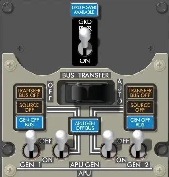
B737 Electrical Panel
패널 라이트 (Elec Panel Light)
| 라이트명 | 색상 | 의미 | 실제 상태 | 포인트 |
|---|---|---|---|---|
| GEN OFF BUS | 파란색 | 발전기가 버스에 연결 안 됨 | 발전기는 정상·단지 미사용 | 고장 아님 |
| APU GEN OFF BUS | 파란색 | APU 발전기가 버스에 연결 안 됨 | APU는 살아있음·공급 안 함 | 전원 없음 아님 |
| SOURCE OFF | 흰색 호박색 | 해당 BUS에 전원 없음 | 완전 무전원 상태 | 가장 중요! |
| GEN ON | 흰색 | 발전기가 버스에 전력 공급 중 | 실제 공급 중 | 정상 상태 |
| APU GEN ON | 흰색 | APU가 버스에 전력 공급 중 | APU가 공급 | 엔진보다 우선 아님 |
| GRD PWR AVAILABLE | 파란색 | 외부 지상 전원 사용 가능 | 연결만 됨 | 공급 중 아님 |
| GRD PWR ON | 흰색 | 외부 지상 전원 공급 중 | 실제 사용 중 | |
| TRANSFER BUS OFF | — | 버스가 전기 네트워크에서 분리됨 | 연결 끊김 | SOURCE OFF와 다름 |
| BUS TRANSFER OFF | — | 자동 전원 분배 기능 해제 | BTB 강제 OPEN | 문제 시작 신호 |
① SOURCE OFF = 그 버스 전기 없음 (가장 심각)
② GEN OFF BUS = 정상인데 연결 안 된 상태 (고장 아님)
③ BUS TRANSFER OFF = 자동 분배 기능 해제 → 문제 시작 신호
패널 스위치 (Elec Panel Switch)
| 스위치 | 기능 | ON 시 | OFF 시 | 포인트 |
|---|---|---|---|---|
| GEN 1/2 | 발전기를 BUS에 연결 허용 | GCB 닫힘 → 전력 공급 | GCB 열림 → 발전기는 계속 돌아감 | 발전기 자체 ON/OFF 아님 — GCB만 제어 |
| APU GEN | APU를 BUS에 연결 허용 | APU 전력 공급 가능 | 공급 안 함 (OFF BUS 유지) | APU 켜도 스위치 안 켜면 공급 안 됨, 반드시 ON 필요 |
| BUS TRANSFER | BUS 자동 연결 기능 | AUTO → BTB 자동 제어 | OFF → BUS 완전 분리 | 가장 중요한 스위치 |
| GRD PWR | 지상 전원 사용 | 외부 전원 공급 | 공급 안 함 | AVAILABLE ≠ ON |
| BUS TIE (BTB) | BUS 1 ↔ BUS 2 연결 | 닫힘 → 전원 공유 | 열림 → 분리 | BUS TRANSFER OFF와 연동 |
| STANDBY POWER | 배터리/인버터 사용 | AUTO → 필요시 자동 공급 | 비상 전원 차단 | 평소엔 영향 없음 |
전원 공급 절차별 Light 변화
GPU 연결(파란불) → GRD PWR ON(흰불) → APU 시동(APU GEN OFF BUS 파란불) → APU GEN SW ON → ENG Start(GEN OFF BUS 파란불) → GEN SW ON → 모든 불 소등 = 정상
전기계통 주요 용어 (2.1.4)
GCU — Generator Control Unit
· IDG 상태 모니터 및 제어, GCB 제어
· AGCU = APU Generator 모니터·제어, APB 모니터·제어
· 계자 전류(F)를 조절해서 발전기 출력(A)을 제어하고 전력을 버스로 공급
IDG — Integrated Drive Generator
· 정속구동장치(CSD) + 발전기(Generator) 통합
· 엔진 RPM 무관하게 항상 400Hz 출력 가능
· 대형 항공기 교류 발전기의 표준
TRU — Transformer Rectifier Unit
· 변압기 + 정류기를 하나로 통합
· AC POWER 받아 감압 후 정류 → 28VDC 공급
· 직류 주전원 역할 (TR1, TR2, TR3)
APU Starter/Generator
· 처음 시동 시: 시동기(APU 시동기) 역할
· 시동 완료 후: 발전기 역할
· SCU(Starter Control Unit)가 초기 Starter 제어
Static Inverter
· 비행 중 AC 전원 없을 때 사용
· 배터리 DC → 115VAC 400Hz 1 phase 변환
· 필수 계통(비상)에 AC 공급
Charger
· 충전기로 AC를 받아서 TRU와 같이 28VDC로 변화시켜 Battery 먼저 충전
· 충전 끝나면 TRU와 같이 작동
GCB
· 발전기 전원을 BUS에 연결/분리
BTB
· 버스와 버스 사이 연결/분리 (BCB라고도 함)
· BUS TRANSFER AUTO 시 BTB가 자동으로 작동
배전 버스 시스템 (2.3.3)
① 분할 버스 (Split Bus) — B737, 757, 777, A300, A320, A310
② 병렬 버스 (Parallel Bus) — B727, MD-11, B747
③ 분할·병렬 버스 (Split-Parallel Bus) — B747-400
(1) 분할 버스 시스템 (Split-bus) — B737 해당!
· 정상 비행 중: GEN 1 → AC BUS 1 / GEN 2 → AC BUS 2 (각자 독립 공급)
· 발전기 1대 고장 시: BTB 자동 닫힘 → 정상 발전기 1대가 양쪽 버스 모두 공급 👉 parallel로 동작
· APU 발전기가 고장 난 주 발전기 대신 예비 전력(backup power) 제공 가능
· RAM Air Turbine(RAT): 모든 발전기(IDG + APU) 고장 시 사용하는 4번째 비상 발전기, 발전량이 적어 제한 배전
정상: IDG 1 → AC BUS 1 / IDG 2 → AC BUS 2 (각자 독립)
IDG 1 고장: BTB 닫힘 → IDG 2가 양쪽 BUS 공급
IDG 2개 모두 고장: APU GEN이 양쪽 BUS 공급
APU GEN도 고장: Static Inverter + Battery → AC/DC Standby BUS
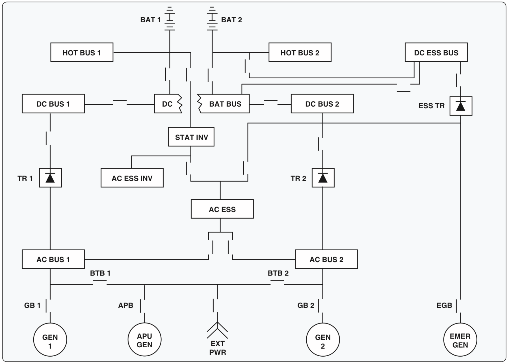
분할 배전 시스템
(2) 병렬 버스 시스템 (Parallel Bus) — B727, B747
· 정상 비행 조건에서 모든 엔진 구동 발전기는 각자의 버스들이 서로 연결하여 교류 부하에 동력 공급
· 발전기 고장 시 고장 발전기만 격리, 버스에 연결된 시스템들은 계속 작동
· 보조동력장치는 운항 중 작동하지 않아 예비전력 제공 불가 → SYNC BUS 유지
· APU 발전기는 오직 지상 운전용
· DC는 무조건 병렬 operation (DCIR 4개 다 open되는 경우 → Landing 시)
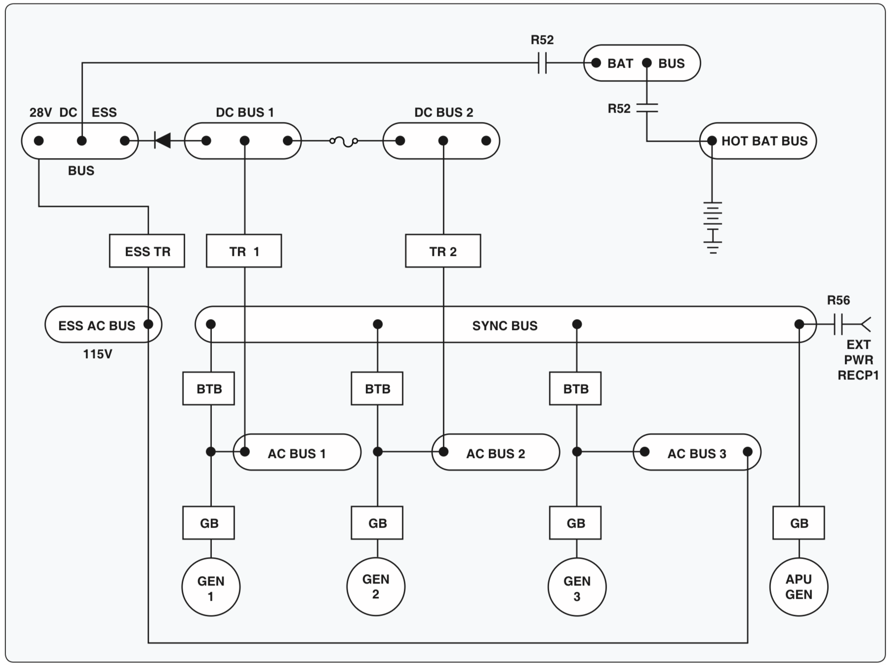
병렬 배전 시스템
(3) 분할·병렬 버스 시스템 (Split-Parallel) — B747-400
· 4개 엔진 구동 발전기 모두 정상 비행 중 병렬로 작동
· 특정 고장 조건 또는 외부 전원 사용 시에만 분할 버스 모드(split-bus mode)로 작동
· SSB(Split System Breaker) — 왼쪽과 오른쪽 동기 조정 버스를 연결하기 위해 사용, 정상 비행 동안 접속 (Normal Close)
· 여러 발전기를 같은 주파수(≈400Hz)와 위상으로 맞추기 위한 기준 신호/버스 역할
IDG 고장으로 BTB 붙었을 때 → 한 놈이 둘 다 공급
DC는 무조건 병렬 operation이 기본
DCIR 4개 다 open = Landing 시 (안전 위해 — 하나 망가지면 4개 다 분리)
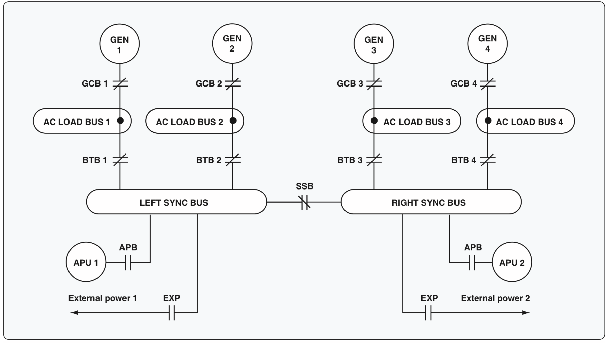
분할-병렬 배전 시스템
GCU / BPCU / CT (2.3.3.1)
GCU — 발전기 제어 장치
· 정확한 작동 보장을 위해 시스템을 모니터링
· 모든 시스템이 한도 이내로 작동할 경우 → 적합한 발전기 회로에 전압을 가하고 시스템을 위해 전압 조절 제공
· 일정한 400Hz 주파수를 보정하기 위해 교류 출력을 모니터링
· 대형기 GCU = 소형기의 Voltage Regulator (전압조절기)에 해당
BPCU — 버스 전원 제어 장치
· Bus Power Control Unit = GPCU(Ground Power Control Unit) 또는 EPCU(External Power Control Unit)라고도 함
· 전력을 배전하기 위해 여러 가지 접촉기를 작동
· 전체 전기 시스템을 모니터링하고 적절한 작동을 보장하기 위해 GCU와 통신
· 시스템을 모니터링하기 위해 CT(변류기)를 이용
CT — 변류기 (Current Transformer)
· 전원 분배 시스템의 주 전원 케이블(main power cable)을 들러싼 유도 장치(inductive unit)
· 대용량의 높은 전류를 안전하고 작게 줄여서 측정할 수 있게 해주는 변압기
· 핵심 전류의 흐름을 감지 = 전류 측정기(just 측정), 정확한 지시를 할 수 있게 함
· 소형기(3상): current transformer 1개 / 대형기(3상): current transformer 3개
GCU와 BPCU는 전력을 제어하고, 결함을 탐지하며, 필요하면 교정 조치를 취하기 위해 함께 일하고, 조종사의 경고 계통과 항공기의 중앙 정비 시스템(CMS, central maintenance system)으로 결함을 통보한다.
소형 단발 항공기 전기 시스템 (2.3.1)
C172 전기 결함과 보호
전기 결함의 2종류
· 개방(open) — 회로가 분리되었을 때 일어나는 전기 결함
· 단락(short) — 1개 이상의 회로가 원치 않는 접속을 만들 때 일어나는 전기 결함
· 가장 위험한 단락 회로: (+)전선이 (-)접속 또는 접지를 만들 때 → 일반적으로 합선 또는 접지
결함으로부터 전기 시스템을 보호하는 2가지 방법
· ① 기계적 방법 — 전선과 부품을 적절하게 장착하고 보호 덮개와 차폐(shields)를 추가하여 마찰과 과도한 마모를 방지
· ② 전기적 방법 — 회로차단기와 퓨즈를 사용하여 보호
회로차단기: 단락 회로인 경우 전류의 과도한 흐름으로 인한 손상으로부터 시스템을 보호
퓨즈: 회로차단기 대신 사용, 일반적으로 구형 항공기에서 사용
소형기(C172 등) 주전원: DC (직류) — AC는 직접 생산하지 않고, 필요 시 인버터로 변환
대형기(B737 등) 주전원: AC (교류) — IDG로 115V/400Hz/3상 생성, DC는 TRU로 변환
소형 단발 항공기 기본 구조
· DC(직류) 시스템이 기본이고, AC(교류)는 직접 생산하지 않고, 필요 시 인버터로 변환
· 전원 공급 우선순위: 1. 배터리 → 2. 알터네이터 → 3. 인버터 AC (필요 시)
· BAT load는 최소화 — 배터리는 ALT load보다 작아야 함
· Avionics Master 켜면 Avionics BUS 2개만 켜짐
C172S 전기 회로도
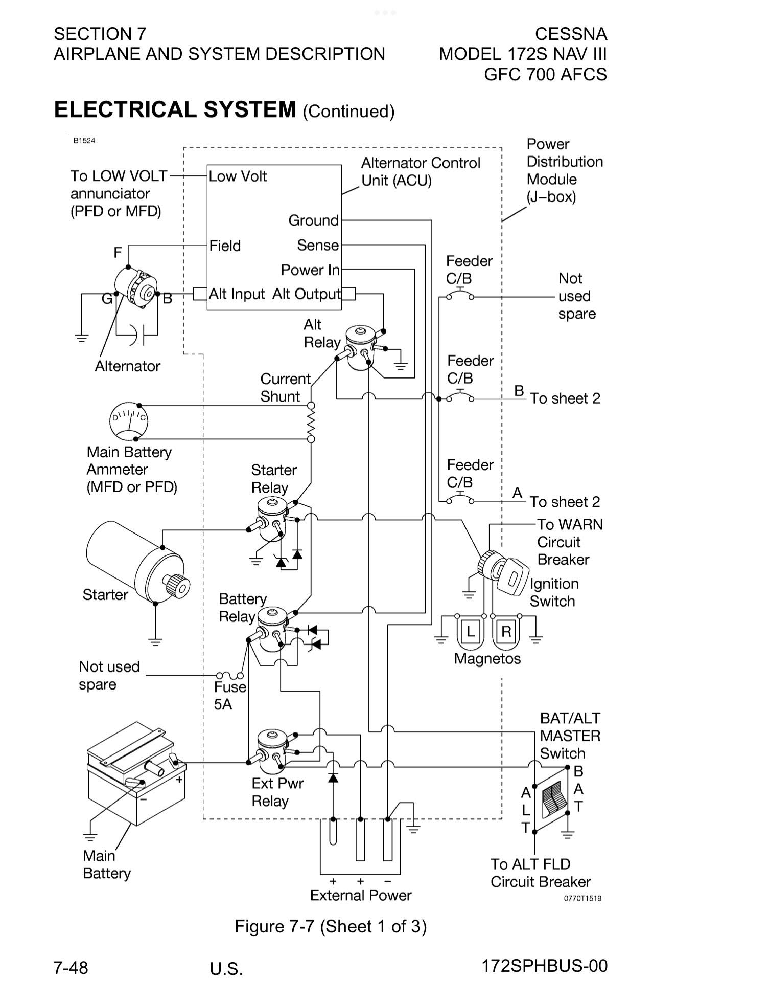
Figure 7-7 (Sheet 1 of 3) — Cessna 172S NAV III · Electrical System (Section 7)
C172 전기 공급 순서 (DC 중심 흐름)
BAT → (Master S/W ON) → STARTER → 엔진 시동 → ALT → (ALT S/W ON) → BUS → 장비
ㄴ 인버터 → AC → 장비
BAT에서 ALT까지 공급됨 (첫 시작 전원 = BAT)
AC는 여기서만 만들어짐 (필요 시만)
C172 버스 종류 및 특성
| 버스 | 정격 | 전원 공급원 | 보호 장치 | 설명 |
|---|---|---|---|---|
| Battery Bus | 제한 없음 | 배터리 직접 | 각 회로 C/B | Master ON 시 항상 전원 공급. BAT만 ON해도 모든 계통에 전기 공급, Main BUS에 무조건 감 |
| Main Bus | 25A | 알터네이터 또는 배터리(보조) | Main Bus C/B (25A) | 항공기 대부분 장비 전원 공급 |
| Avionics Bus | 5A | 메인 버스 | Avionics Bus C/B (5A) | 항공전자 장비 전용. Avionics Master 제어 |
| Essential Bus | 제한 없음 | 메인 버스 (배터리 경유 가능) | 각 회로 C/B | 비상 시 필수 장비 유지 (Load Shedding 시 살아 있음) |
| AC System | 15A (인버터), 각 장비별 | 메인 버스 (DC) | Inverter C/B (15A), 각 장비별 C/B | DC를 AC로 변환하여 일부 장비에 공급 (버스 없음) |
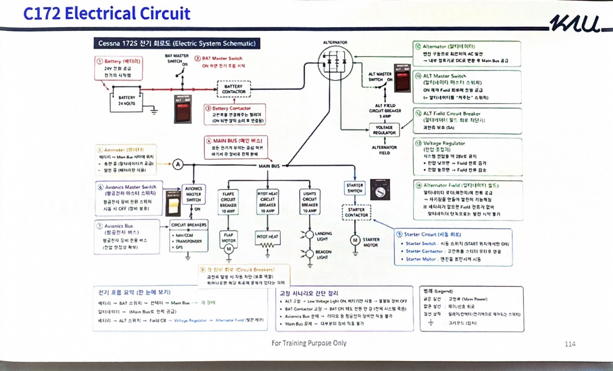
Cessna 172S 전기 회로도
C172 전기 공급 순서 (AC/DC)
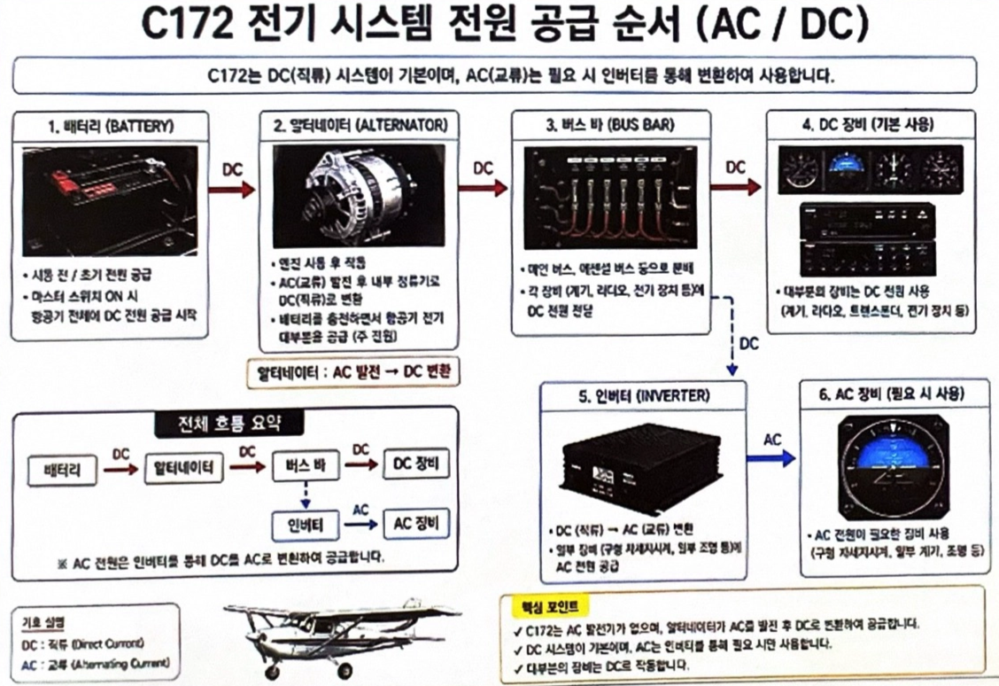
C172 전기 시스템 전원 공급 순서
C172 전기 장비 위치 (C172S)
① 스타터 (Starter)
· 위치: 엔진 뒤쪽, Accessory Section 하단
· 엔진의 플라이휠을 회전시켜 시동을 건다
② 알터네이터 (Alternator)
· 위치: 엔진 전면 하단 우측 (모동 4~5시 방향)
· 엔진 회전으로 발전하여 전기 시스템에 전원을 공급
③ 배터리 (Battery)
· 위치: 방화벽(Firewall) 뒤쪽, 조종석 우측 하단 (흰색 티백 또는 사이드 패널 내부)
· 신형 C172S/R: 방화벽 뒤(조종석 측)에 배터리 위치
· 구형(C172N 등): 엔진룸 내부에 배터리 위치
종류: 황산납 배터리
· 소형기 BAT 종류: 황산납
· 전기를 만들어냄 → DC 제어 및 설명
C172 주요 회로 (Battery / Generator / Alternator)
배터리 회로 (2.3.1.1 Battery Circuit)
항공기 배터리 회로는 엔진 시동을 위한 전원을 공급하고 교류기 또는 발전기가 고장 난 경우에 배터리로 이차적인 전원 공급을 제공하기 위해 사용
솔레노이드 vs 릴레이
· 솔레노이드: 고(高) 전류 회로의 전환을 위해 사용 → 주로 조종면 계통, 유로 변경해서 보내줄 때 사용
· 릴레이: 저(低) 전류 회로를 제어하기 위해 사용 → 그 외에는 릴레이 사용
기능은 거의 같은데 용도가 살짝 다름
배터리 회로 작동 원리 (4단계)
① 마스터 ON (기본 전원 공급): Battery → Master solenoid → Main Bus → 항공기 전기 시스템 활성화
② 시동 시 (빨간선): Battery → Starter solenoid → Starter → 큰 전류로 엔진 회전
③ 발전 후 (엔진 가동): Alternator → Main Bus 공급 + 동시에 Battery 충전
④ 외부전원 사용: External power jack → 릴레이 → Bus (배터리 없이도 전원 사용 가능)
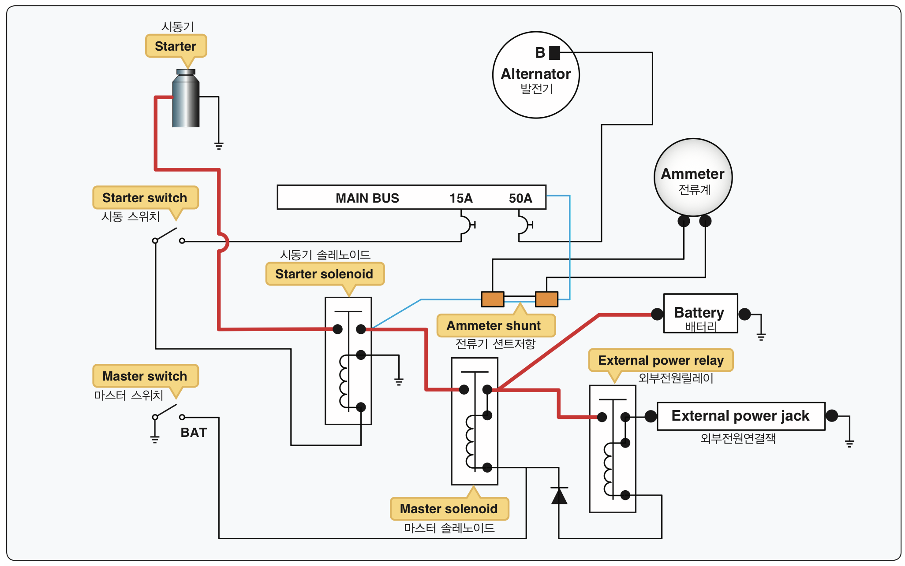
배터리 회로 배선도
발전기 회로 (2.3.1.2 Generator Circuit)
· 항공기 발전기와 배전 버스 사이에 전력을 제어하기 위해 사용
· 발전기 스위치는 발전기 계자(generator field), F 단자의 전원을 제어한다 → 입력단
· 발전기 출력 전류는 발전기의 전기자 회로(armature circuit)인 A 단자를 통해 항공기 버스로 공급된다 → 출력단
· ① 발전기 출력 전류: A(전기자) → GCU → Bus (실제 사용되는 전기)
· ② 계자 전류(Field Current): GCU → F(계자)로 전류 공급 → 자기장 세기 조절 → 발전량 조절
결론: GCU는 계자 전류(F)를 조절해서 발전기 출력(A)을 제어하고, 전력을 버스로 공급
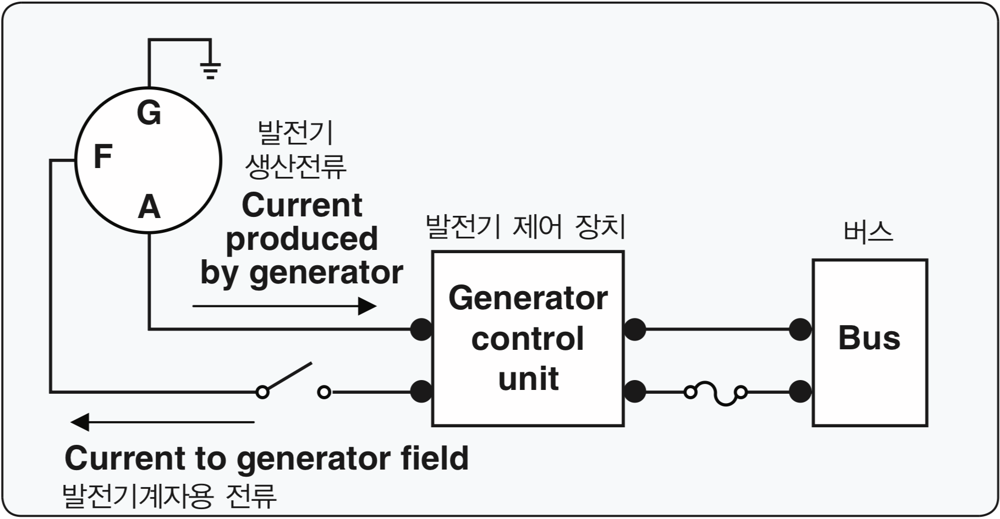
GCU 발전기 컨트롤 회로
교류기 회로 (2.3.1.3 Alternator Circuit)
· 교류기의 입력 및 출력의 전원을 제어
· 마스터 스위치는 교류기 제어 장치(alternator control unit) 또는 전압 조절기 내에 회로를 차례로 작동시키고 교류기 필드(alternator field)로 전류를 보내준다
· 교류기 제어 회로의 주요 부품 : 교류기(alternator), 전압 조절기(voltage regulator), 교류기 마스터 스위치
· 전압 조절기 : 항공기 전기 부하에 따라 발전기 필드(계자)전류를 제어
· 교류기 회로에 배치되는 전류계는 오직 한쪽 방향으로 교류기에서 버스까지의 전류 흐름을 보여주는 단일극 계측기(single polarity meter)
· 교류기는 전기자 회로에 다이오드를 포함하고 있어 버스에서 교류기로 전류 역류를 예방
· 교류기 시스템이 작동 불능이면 전류계는 '0'을 지시하며, 배터리가 방전되고 있는 것
ALT 고장 → Low Voltage Light ON, 배터리만 시동 → 필요한 장비 OFF
BAT Contactor 고장 → BAT ON 해도 전동 안 감 (전체 시스템 죽음)
Avionics Bus 분해 → 라디오 등 항공전자 장비 성능 불가
Main Bus 문제 → 대부분의 장비 작동 불가
외부 전원 회로 (2.3.1.4 External Power Circuit)
· 외부 전원은 엔진 작동 없이 항공기에서 정비 및 점검을 위해 필요한 전기 공급을 위해 사용
· 다이오드는 외부전원연결이 부정확한 극성을 가질 경우, 예를 들어 양과 음의 배선이 반대로 되는 경우, 우발적인 연결을 방지하기 위해 사용 (역전류흐름방지 다이오드)
시동기 회로 (2.3.1.5 Starter Circuit)
· 대부분의 현대 항공기는 엔진 시동을 위해 전동기 사용
· 시동기는 배터리 or 외부 전원 장치에 의해 동력 공급
· 작동원리
① 배터리 마스터 스위치 ON: Battery solenoid 작동 → 배터리가 메인 버스에 연결됨
② Starter Switch 작동(S 위치): Starter solenoid 여자(코일에 전류 흐름) → 고전류 접점이 닫힘
③ 전류 흐름: 배터리 → Starter solenoid → Starter Motor → 엔진 회전
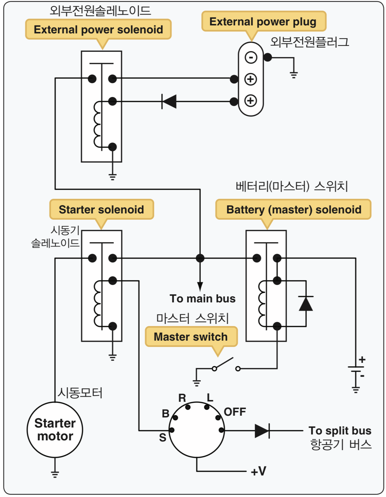
시동기 회로
항공 전자 기기 전원 회로 (2.3.1.6 Avionics Power Circuit)
· 일부 항공기는 전자 계통 컴퓨터들을 위해 별도로 단독 배전 버스(separate power distribution bus)를 가지고 있으며, 이 버스를 항공 전자 버스(avionics bus)라고 부른다
· 시동 전동기(starter motor)가 작동할 때 항공전자계통 버스에 전원을 연결하지 않는 경우 — 시동 전동기에 의해 초기의 과전압이 민감한 항공전자기기로 공급 되는 것을 방지하기 위한 것
· 외부전원이 항공기에 연결될 때 항상 작동
교류 공급 (2.3.1.7 AC Supply) — 소형기 인버터
· 경량 항공기는 저(低) 전력 교류 전기 시스템(low-power AC electrical system)을 사용
· 인버터 장치: 배터리 직류 전원 24VDC → 교류 115VAC 400Hz 1 phase로 변환하여 공급하는 장치
· DC 전원을 주로 사용하는 경량 항공기에서 교류 전류가 필요로 할 때 사용
· 항공기에서 비상용 전원으로 사용
항공기에서 주로 사용하는 인버터 종류 (2가지) → 안보고 넘어감
· 회전형인버터(rotary inverter) — 낮은 신뢰성, 과도한 무게, 비효율로 인하여 구형 항공기에서만 볼 수 있다
· 스태틱 인버터(static inverter) — 가동부가 없이 직류에서 교류로 전환시키기 위해 전자 회로 소자를 사용. 3상은 못 만들어내고 단상만 가능
· 항공기용 인버터는 26[Vac]와 115[Vac]를 생산
경량 다발 항공기 (2.3.2)
· 쌍발 항공기에는 여러 부하에 전류 공급용으로 2개의 교류기 또는 발전기를 가동할 수 있다
· 배전 버스 시스템은 회로 보호기, 다이오드, 릴레이를 통해 연결
병렬 교류기 / 발전기 (Paralleling Alternators or Generators)
· 쌍발 항공기엔 2개의 교류 발전기가 사용되므로, 두 발전기 모두 전기 부하를 균등하게 공유하는게 중요
· 교류 발전기 출력을 균등화하는 이 과정을 병렬 운전(paralleling)이라 한다
· 대부분 쌍발 항공기 경우 교류발전기가 작동하는 상태에서 전압은 26.5~28[VDC] 사이
· 다발기는 병렬로 동작 → 단발 빼고 병렬 운전
배터리 종류 & 특성 (2.2)
교류 전원을 직류로 정류하여 사용 + 비상전원으로 배터리 충전하여 사용
항공기 배터리 용도: APU 시동(starting) + 비상 전원(emergency power)
황산납 배터리 (Lead-acid)
소형기·구형기· (1) 건식 충전 셀: 침수식(flooded)/습식(wet)이라고도 함
· 6셀: 약 12V / 12셀: 약 24V (직렬 연결)
· 경항공기·소형 프로펠러 항공기(훈련기, Cessna 계열)
· (2) VRLA(밸브-조절 황산납): 밀폐형 배터리, 전해액 없는 유리 매트
· 범용 항공기와 터빈항공기 사용, NiCd 대체품
· 소형 항공기, 비즈니스 제트기, 헬리콥터 일부
· 개개의 셀을 떼어놓을 수 없도록 조립됨
· 완전히 방전된 배터리는 제충전 불가
· 높은 방전율, 저온에서 높은 성능
니켈카드뮴 배터리 (NiCd)
대형 여객기 표준· 항공기 전원 12V 또는 24V를 얻기 위해 직렬로 연결
· 셀당 정격 전압: 1.2V
· 다수의 셀을 스테인리스강/수지 피복강/도색강/티타늄 박스로 제작
· 배기식 셀(vented cell) 유형 — vent valve 또는 low pressure release valve 보유
· 셀 교체 시 배터리 수명 5년 이상 연장
· 정격 용량 작동 온도: 16~32°C (60~90°F)
· 대형 여객기(B737/777, A320/330), 군용기, 일부 비즈니스 제트기(G550)
리튬이온 배터리 (Li-Ion)
최신 대형기· 셀 기전력: 3.6V/cell
· B787, A350, G500/600, 일부 군용기·드론
① Li의 휘발유보다 높은 반응성
② 공기·수분 접촉 시 불이 붙는 인화특성
③ 외부 충격· 압력에 의해 short(합선) 시 열폭주 → 금속 캔 폭발, 리튬 성분이 공기와 만나 발화
배터리 저장과 서비싱 — 주의!
① 동일 지역에 황산납 배터리와 니켈카드뮴 배터리를 저장하고 점검하는 것은 대단히 위험하다.
② 알칼리성전해액(NiCd) 안으로 산성전해액(납산)의 유입은 니켈카드뮴 배터리를 파괴하고 반대의 경우도 같다.
배터리 용량 & 정격 (2.2.1.3 / 2.2.1.4)
용량의 정의 (Capacity)
실온에서 정해진 차단 전압(cut-off voltage)으로 명시된 방전율(discharge rate)로 전달되는 암페어 아워(AH)로서 정량적으로 측정한다.
차단 전압: 셀당 0.1V, 배터리를 더 이상 방전시키면 안되는 최소 전압
배터리 유효 용량에 영향을 주는 4가지 요인
① 셀 디자인
셀 구조, 판의 두께, 하드웨어, 단자 설계가 온도·방전율 등 사용 조건에 따라 성능을 좌우. 설계 단계에서 이미 결정.
② 방전율
고전류율이 저전류율보다 더 적은 용량을 산출. 전류를 많이 뽑을수록 실제 사용 가능한 용량이 줄어든다.
③ 온도
용량과 전압준위는 배터리 온도가 16°C~32°C (60°F~90°F) 범위에서 높거나 낮은 극단으로 갈수록 감소.
④ 충전율
대개 충전율(charge rate)이 높을수록 더 큰 용량을 산출. 단, 과충전 주의.
배터리 정격 — 1시간 정격
배터리가 1시간 동안 지속적으로 공급(방전)을 하는 경우로, 아래 전압 기준을 만족할 때를 의미한다. (배터리를 1시간 방전했을때 기준이 되는 전류값)
정격이란? 배터리가 어느정도 전압과 전류용량을 낼 수 있는지 나타낸 값
① 전압정격: 12V / 24V, 배터리가 공급하는 기준 전압
② 용량정격: 40Ah / 60Ah, 얼마나 오래 전류 공급이 가능한지
Ah로 측정한 1시간 용량 = end voltage 방전율 x 시간
흐름 암기: 셀당 1.67V 이상 → 황산납(24V 시스템)은 20V → 12V짜리 황산납은 10V
즉, 배터리 시스템 전압에 따라 1시간 정격의 최저 허용 전압이 달라진다.
비상률 (Emergency Rate)
비상 상황에서 항공기가 안전하게 착륙하는 데 필요한 최소 전기 공급 시간. 배터리 용량 선정 시 반드시 충족해야 함.
시험 핵심 암기표
| 항목 | 내용 | 암기 포인트 |
|---|---|---|
| 용량 단위 | 암페어 아워 (AH) | AH = A × h |
| 차단 전압 | 셀당 0.1V | cut-off voltage = 0.1V/cell |
| 1시간 정격 (일반) | 셀당 1.67V 이상 | NiCd 등 기준 |
| 1시간 정격 (황산납 24V) | 20V | 12셀 황산납 |
| 1시간 정격 (황산납 12V) | 10V | 6셀 황산납 |
| 비상률 기준 시간 | 30분 | emergency rate = 30 min |
| 용량 감소 원인 | 고전류 방전, 극단적 온도 | 전류↑ → 실용량↓ |
| 최적 온도 범위 | 16~32°C (60~90°F) | NiCd 정격 용량 온도와 동일 |
배터리 충전 방식 (2.2.1.8)
정전압 충전 (CV — Constant Voltage)
비행 중 항공기 배터리 충전 방법· 전압을 일정하게 유지하는 방식
· 전압을 일정하게 유지하기 위해 전류값이 변한다
· IDG가 충전용 전압을 항공기 배터리에 직접 공급
· 12V 시스템: 발전기 전압 약 14.25V로 조정
· 24V 장치: 28~28.5V 사이에 있어야 함
· 황산납 배터리: 셀당 전압 2.35V 초과 금지
정전류 충전 (CC — Constant Current)
니켈카드뮴 배터리 충전에 적합· 외부에서 공급하는 전류를 일정하게 유지하면서 충전
· 전류를 일정하게 유지하기 위해 전압값이 변한다
· 다양한 전압의 여러 배터리를 동일한 시스템에서 한 번에 충전 가능
· 비행기 외부 배터리 공장 등에서 배터리를 충전하기에 가장 용이
· 과충전 또는 추가 충전(top-up) 시: 셀 전압 1.6V 넘어 서서히 떨어지기 시작
· 어떤 셀도 1.71V 이상 올라가거나 1.55V 이하로 떨어지지 않아야 함
CC/CV 충전
리튬이온 배터리 충전에 적합· 충전 시작하면 CC 먼저 -> CV 충전이 순서대로 이뤄짐
· 배터리에 충전기를 접속하면 먼저 CC 조건을 발동하고 흐르는 전류량을 일정하게 유지
· 시간이 지나면, 어느 순간 배터리 내부 전압이 기준치에 도달
· 전압은 일정하게 유지하되, 전류의 양을 서서히 줄여주는 방식
· 이후 전류가 Cut-off에 도달하면 충전이 완료
CC/CV 충전 비교표
| 구분 | CC (Constant Current) | CV (Constant Voltage) |
|---|---|---|
| 제어 방식 | 전류를 일정하게 유지 | 전압을 일정하게 유지 |
| 전류 변화 | 일정 (고정) | 점점 감소 |
| 전압 변화 | 점점 증가 | 일정 (고정) |
| 충전 속도 | 빠름 | 느림 |
| 충전 구간 | 초기 (~70~80%) | 후반 (~80~100%) |
| 목적 | 빠른 에너지 충전 | 과충전 방지 및 안정화 |
| 배터리 상태 | 아직 여유 있음 | 거의 충전 완료 상태 |
| 위험 요소 | 상대적으로 적음 | 과전압 시 위험 |
| 역할 비유 | 빠르게 물 채우기 | 넘치지 않게 조절 |
CC/CV 7단계 충전 절차
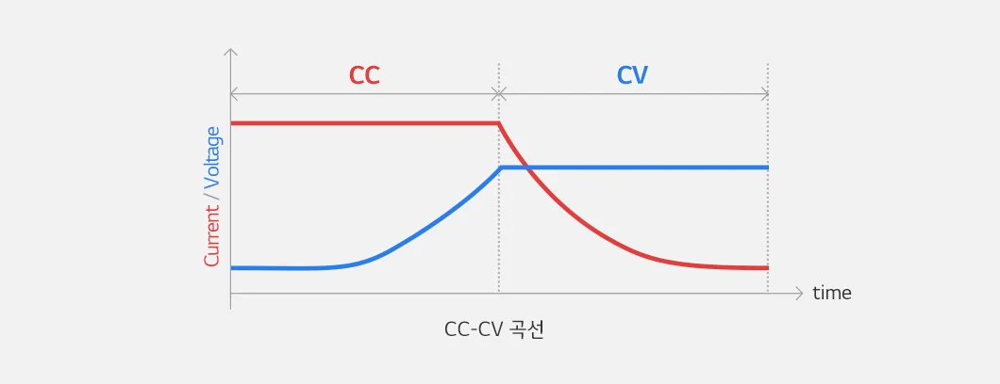
CC/CV 충전 과정
배터리 종합 비교표 (시험 핵심 암기)
| 구분 | 납 (Lead-Acid) | 니켈-카드뮴 (NiCd) | 리튬-이온 (Li-Ion) |
|---|---|---|---|
| 셀 전압 | 2V / cell | 1.2V / cell | 3.6V / cell |
| 방전 종지전압 | 1.75V / cell | 1.08V / cell | — |
| 충전(가스발생) 전압 | 2.5V / cell | 1.4V / cell | — |
| 충전 종지전압 | 2.75V / cell | — | — |
| 에너지 밀도 | 낮음 (20~50Wh/kg) | 보통 (30~70Wh/kg) | 매우 높음 (100~200Wh/kg) |
| 충·방전 횟수 | 낮음 (~200회) | 보통 (~500회) | 높음 (~1,000회) |
| 자연방전 | 높음 (~20%/월) | 높음 (~30~40%/월) | 거의 없음 (~1%/년) |
| 메모리 효과 | 낮음 | 높음 | 없음 |
| 가격 | 낮음 | 높음 | 다소 높음 |
| 특징 | 경제성, 낮은 에너지 밀도, 무거움 | 낮은 에너지 밀도, 메모리 효과 | 경량, 고출력, 폭발 위험성, 열화/스웰링 |
| 항공 용도 | 경항공기, 소형 훈련기, 비상 조명 | B737/777/A320 등 대형 여객기 표준 | B787, A350, 드론, UAM |
방전 종지 전압: 더 이상 방전되어서는 안되는 최소 전압
충전 종지 전압: 최대 충전 전압
메모리 효과: 배터리를 완전히 방전하지 않고 반복 충전할 경우 사용 가능한 용량이 감소하는 현상. 예) 원래 100까지 쓸 수 있는 배터리를 매번 -> 50까지만 쓰고 -> 다시 충전 -> 또 50까지만 쓰고 충전 -> 이걸 반복하면 👉 배터리가 “아~ 원래 50까지만 쓰는 배터리구나” 라고 인식 -> 결과 👉 실제 사용 시간이 짧아짐
리튬이온 대비 부피·무게 비교
납축전지 셀 전압 특성 (암기)
| 항목 | 전압 |
|---|---|
| 셀 단위전압 | 2V/cell |
| 셀당 방전 종지전압 | 1.75V/cell |
| 충전 전압 (가스 발생전압) | 2.5V/cell |
| 충전 종지전압 | 2.75V/cell |
니켈-카드뮴 셀 전압 특성 (암기)
| 항목 | 전압 |
|---|---|
| 셀 단위전압 | 1.2V/cell |
| 셀당 방전 종지전압 | 1.08V/cell |
| 충전 종지전압 (가스 발생전압) | 1.4V/cell |
정전압 충전 소스를 사용하면 셀이 단락된 NiCd 배터리가 과충전으로 인해 과열되고 열 폭주 발생 → 항공기 안전 위험!
재조정 주기(reconditioning cycle) 및 충전 주기(charging cycle)에 대한 충전 방식(charging regime)은 항공기제작사가 정의하므로 반드시 준수.
2.6 항공기 조명계통 (Aircraft Lighting System)
① 실내 용도 — 조종석, 객실 및 화물칸에 조명 제공
② 실외 용도 — 항법등, 충돌 방지등, 착륙등 제공
③ 비상 전원 — 정상 전원 결함 시 비상등 작동을 위한 별도 비상 전원 계통 제공
조명 분류 체계
🔵 내부 조명 (Interior)
· 조종석 (Cockpit / Flight Compartment)
· 객실 (Cabin / Passenger Compartment)
· 화장실 (Lavatory)
🟡 외부 조명 (Exterior)
· 항공기 동체(Fuselage) → 3축 (Rudder, Stabilizer 등)
· Cargo / Wheel Well / E&E → 정비 목적의 애매한 부분들
조명 전체 트리 구조
LIGHTS
| 대분류 | 세부 내용 |
|---|---|
| Flight Compartment | 조종석 계기판, 패널 조명 |
| Passenger Compartment | 객실 천장등, 독서등, 좌석 주변 조명 |
| Cargo Compartments | 화물 적재 칸 조명 |
| Service Compartments | Wheel Well, E&E bay, Cargo 등 정비 목적 |
| Exterior | Navigation, Strobe, Beacon, Landing, Taxi, Logo, Wing Inspection |
| Emergency | 내·외부 모두 해당 / 전원은 배터리, 별도 비상 전원 있음 |
외부등 종류 한눈에 보기
| 등 이름 | 한국어 | 색상 | 용도 / 특징 |
|---|---|---|---|
| Navigation Lights (Position Lights) | 위치등 / 항법등 | 좌: 적색, 우: 녹색, 후: 백색 | 비행 중 반드시 ON (4개 장착, 비행 중 무조건 켜야 함) |
| Strobe Lights (White Anti-collision) | 백색 충돌 방지등 | 백색(White) | Wing tip + 미부 말단 설치 / 고전압 방전으로 섬광 발생 |
| Beacon Lights (Red Anti-collision) | 적색 충돌 방지등 | 적색(Red) | 토잉·엔진 작동 중 ON / 동체 상하에 장착 / 회전하며 깜빡 |
| Landing Lights | 착륙등 | 백색(White) | 야간 착륙 시 활주로 조명 / 가장 강한 빔 / 지상에서 작동 지양 |
| Taxi Lights | 유도등 | 백색(White) | 지상 이동(Taxi) 중 ON / Nose Gear에 장착 (대형기) |
| Runway Turnoff Lights | 활주로 옆길 등 | 백색(White) | 활주로 이탈 후 유도로(Taxiway)로 회전 시 사용 |
| Wing Illumination Lights (Wing Scan Light) | 날개 검사등 | 백색(White) | 야간 날개 결빙·FOD 확인 목적 / Wing & Engine scan light |
| Logo Lights | 로고등 | 백색(White) | 수평 안정판(Horizontal Stabilizer)에 장착 → 수직 안정판의 항공사 로고 조명 |
2.6.1 외부등 (Exterior Lights)
항공기 식별, 방향 및 항공기의 안전한 운항을 돕기 위해 조명을 제공한다.
외부등 상세 설명
Wing Illumination Lights (날개 검사등)
· = Wing Scan Light = Wing & Engine Scan Light 으로도 불림
· 날개 Leading Edge 결빙이나 엔진 결빙 상태를 확인하기 위한 조명
· Wing & Engine scan light라고도 하며, 날개 검사등으로도 불린다
Landing Lights (착륙등)
· 빔이 가장 강함 — 외부등 중 가장 강력한 광원
· 지상에서는 작동을 지양한다 (지상 과열 우려)
· 파라볼릭 반사경(parabolic reflector)으로 빔의 최대 도달 거리 극대화
· Retractable형(대형기, 평소엔 들어가 있고 필요 시 튀어나옴) vs Fixed형(동체에 고정)
Red Anti-Collision Lights = Beacon Light (적색 충돌 방지등)
· 토잉·엔진 작동 중 ON — 지상에서 작업 중임을 알리는 신호
· 동체 또는 미익위(tail/wing)에 설치, 회전하면서 깜빡거림 (Rotating Beacon)
· 동체 상하에 장착 (대형 항공기의 경우)
· 앞뒤에 1개씩 — 회전 빔 방식
White Anti-Collision Lights = Strobe Light (백색 충돌 방지등)
· 날개끝(Wing Tip) + 미부 말단에 설치 / 3개 있음
· 고전압 커패시터의 방전(high-voltage discharge)으로 섬광 생성
· 분당 40~100 [cycle] 섬광률(flash rate)로 깜빡임
Position Lights = Navigation Lights (위치등 / 항법등)
· 좌: 적색(Red), 우: 녹색(Green), 후: 백색(White) — 비행 중 반드시 ON
· 하나의 S/W 한 개로 좌우 모두 담당 → S/W 망가지면 둘 다 안 켜짐
· 각 위치에 Lamp 2개 들어있음 (한 개 고장 시 백업)
Taxi Lights (유도등)
· 항공기 택시 중 ON 하는 등
· 대형기: Nose Landing Gear에 하나 붙어있음
· 소형기: 동체에 붙어있음
Logo Lights (로고등)
· 수평 안정판(Horizontal Stabilizer) 상단에 장착
· 수직 안정판(Vertical Stabilizer)에 있는 항공사 로고를 비추는 등
· 특히 야간에 항공사 로고나 상징(emblem)이 잘 보이도록
B737 외부등 위치 요약
| 위치 | 등 종류 | 색상 |
|---|---|---|
| 좌측 날개끝 (Left Wing Tip) | Position Light + Strobe Light | 적색 + 백색 |
| 우측 날개끝 (Right Wing Tip) | Position Light + Strobe Light | 녹색 + 백색 |
| 항공기 후미 (Tail) | Position Light (백색) + Strobe Light | 백색 |
| 동체 상하 (Fuselage Top/Bottom) | Anti-Collision Light (Beacon) | 적색 |
| 날개 루트 근처 | Wing Illumination / Scan Light | 백색 |
| 수평 안정판 | Logo Light | 백색 |
| Nose Gear (대형기) | Taxi Light | 백색 |
| 날개 Leading Edge / Wing Root 부근 (대형기) | Landing Light (Fixed + Retractable) | 백색 |
| Nose Gear 근처 | Runway Turnoff Light | 백색 |
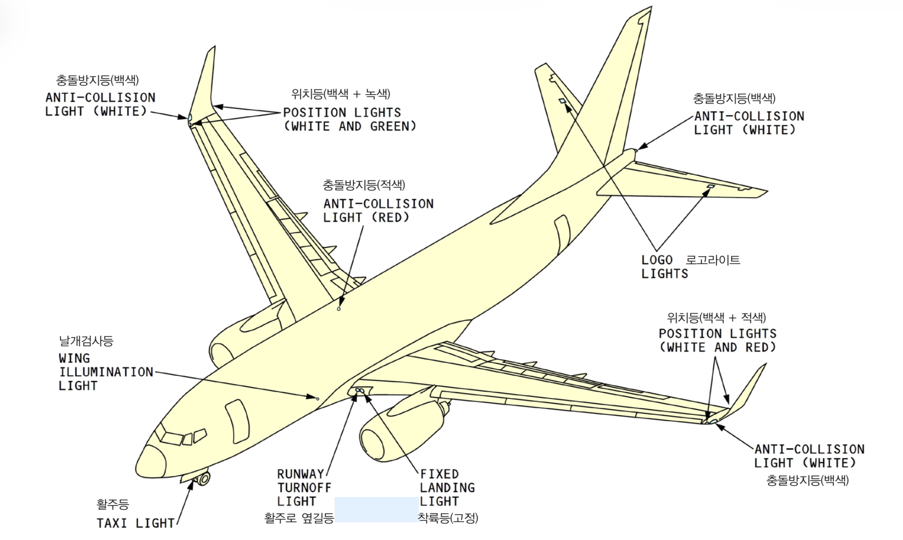
B737 외부라이트
2.6.1.1 위치등 (Position Lights)
야간 비행 시 미 연방 규정집(CFR, Code of Federal Regulations) Title 14에 명기된 최소 요구사항에 합당하는 위치등을 갖추고 있어야 한다.
위치등 색상 구성 (암기)
항공기 위치, 비행 방향 및 자세 등을 알 수 있게 한다.
상대방 항공기에서 볼 때: 적색이 보이면 → 해당 항공기의 왼쪽(좌측), 녹색이 보이면 → 오른쪽(우측)
위치등 전기 회로도 해설
전원 계통
· 115V AC → GND SVC BUS 1 → SECT 1 에서 전원을 받음
· GND BUS에서 가지치기 → Section으로 분기됨
· Transformer (XFMR): 위치등은 XFMR 사용 → 이걸로 전압의 범위를 만들어줌 (밝기 조절)
스위치 (Position Switch P5)
· STEADY: Position light만 들어옴
· STROBE & STEADY: Position + Strobe 둘 다 들어옴 (이때 Strobe는 White)
· S/W 1개로 Right + Left light 모두 담당
· S/W 망가지면 둘 다 안 켜짐
램프 구성
· 하나의 위치에 Lamp 2개 들어있음
· 정상: 위에서 동시에 움직임 (한 쪽이 나가도 나머지 작동)
· Right FWD Wing Tip Light / Right Tail Position Light
· Left FWD Wing Tip Light / Left Tail Position Light
위치등 회로 흐름
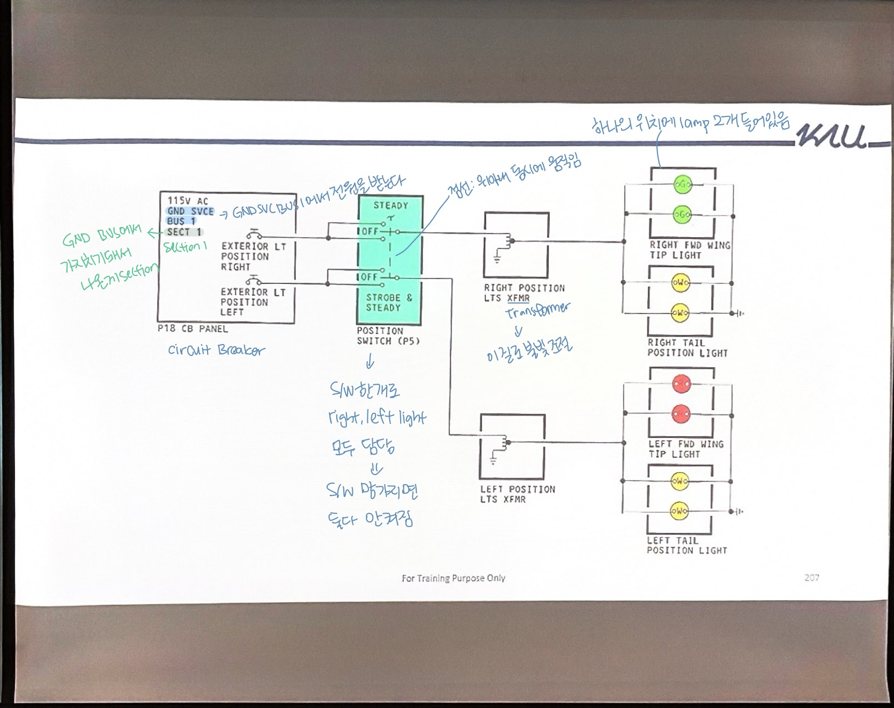
위치등 회로
2.6.1.2 충돌 방지등 (Anti-Collision Lights)
① Red Anti-Collision (Beacon Light) — 동체 상하 2개, 회전하면서 깜빡임
② White Anti-Collision (Strobe Light) — 날개끝 2개 + 미부 말단 1개 = 총 3개
공통 특징
· 하나 이상의 라이트로 구성
· 동체 또는 미익위(tail/wing)에 설치 — 보통 승무원의 시야에 영향을 주지 않으면서 위치등의 가시성(visibility)을 방해하지 않는 위치에 회전 빔 조명
· 대형 항공기의 경우 충돌 방지등은 동체 상하에 장착되어 작동
· 반사경이 원호(arc)로 회전하며 결과 섬광률(flash rate): 분당 40~100 [cycle]
① Red Anti-Collision Light (Beacon Light)
· = 비컨 라이트(Beacon Light) 라고도 함
· 토잉, 엔진 작동 중 ON — 지상 작업 시 안전 신호
· 앞뒤에 1개씩 — 동체 위아래에서 넓게 비춰줌
· 전원: PSU(Power Supply Unit) 사용 → 정기적으로 light 켤 때만 PSU 사용
ℹ️ 여기서 Strobe는 RED / 위치등은 XFMR
Red Anti-Collision 회로 흐름
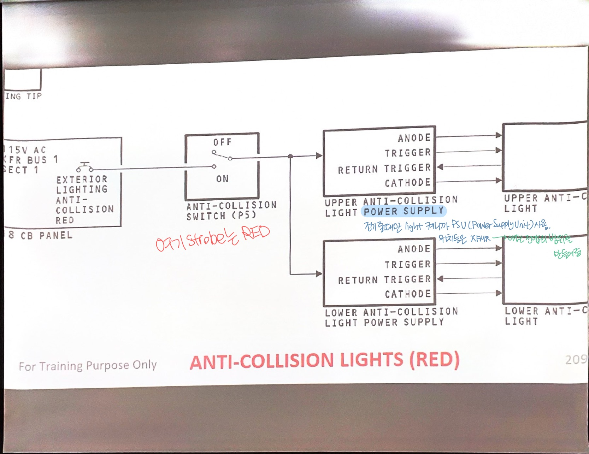
백색 충돌방지등 회로
② White Anti-Collision Light (Strobe Light)
· = 백색 섬광등(white strobe light)
· 날개끝(wing tip) + 미부 말단에 설치 — 총 3개 (Left wing tip, Right wing tip, Tail)
· 커패시터의 고전압 방전(high-voltage discharge)에 의해 매우 밝은 간헐적 섬광(intermittent flash) 생성
· 분당 40~100 cycle 섬광
White Anti-Collision 회로 흐름 & 스위치 동작
· 전원: 115V AC XFR BUS 1 → P18 CB Panel → EXTERIOR LIGHTING ANTI-COLLISION WHITE
· POSITION SWITCH (P5) 3단계:
— STEADY: Position light만 들어옴 (Strobe X)
— OFF: 꺼짐
— STROBE & STEADY: Position + Strobe 둘 다 들어옴 (이때 Strobe는 White)
· 스위치 → RIGHT/LEFT Wing Tip Anti-Collision Light Power Supply → FWD Wing Tip Light 점등
· Tail Strobe Light 도 동일 스위치에서 공급
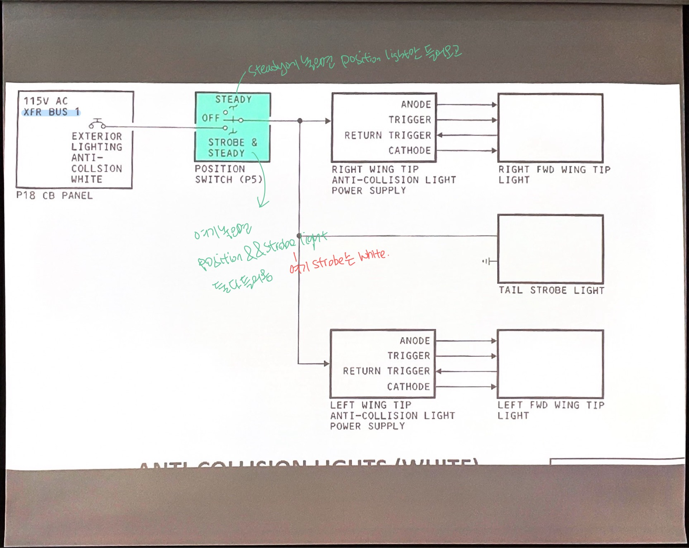
백색 충돌방지등 회로
Red vs White Anti-Collision 비교표
| 구분 | Red (Beacon) | White (Strobe) |
|---|---|---|
| 별칭 | Beacon Light / Rotating Beacon | Strobe Light |
| 색상 | 적색 (Red) | 백색 (White) |
| 설치 위치 | 동체 상하 (2개) | Wing Tip 좌우 + Tail (3개) |
| 발광 방식 | 반사경 회전 (Rotating) | 커패시터 고전압 방전 (Discharge) |
| 전원 공급 | PSU (Power Supply Unit) | Wing Tip Anti-Collision Power Supply |
| 스위치 | ANTI-COLLISION SW (P5) | POSITION SW (P5) — Strobe & Steady |
| 사용 시기 | 토잉, 엔진 작동 중 | 비행 중 (충돌 방지) |
| 섬광률 | 분당 40~100 cycle | 분당 40~100 cycle |
❓ 위치등 회로 vs 충돌방지등(White) 회로 — 왜 다를까?
핵심: 발광 원리가 다르기 때문 — 위치등은 그냥 전구, Strobe는 고전압 방전관
두 회로도 나란히 비교
▶ Position Light 회로 (위치등)
위치등(Position Light) 회로 — XFMR(변압기)로 전구 구동
▶ Anti-Collision Light (White Strobe) 회로
Anti-Collision Light (White Strobe) 회로 — PSU(방전 전원공급장치)로 섬광 구동
회로가 다른 이유 — 핵심 분석
같은 스위치에서 켜지는데 왜 회로가 다를까?
POSITION SWITCH(P5)는 물리적으로 하나지만, 내부에 여러 접점(contact)을 가진 다중 출력 스위치입니다.
STEADY 위치 → 위치등 접점만 연결
STROBE & STEADY 위치 → 위치등 접점 + Strobe 접점 동시 연결
├─ [STEADY] ──────────→ XFMR → Position Light (지속 점등)
│
└─ [STROBE & STEADY] ──→ XFMR → Position Light (지속 점등)
└──→ PSU → Strobe Light (섬광 방전)
발광 원리가 달라서 부품이 다르다
| 비교 항목 | 위치등 (Position Light) | 충돌방지등 White (Strobe) |
|---|---|---|
| 전원 버스 | GND SVC BUS 1 | XFR BUS 1 |
| 핵심 부품 | XFMR (변압기) | POWER SUPPLY (PSU) — 방전 전원공급장치 |
| 부품 역할 | 전압 범위를 조절해 밝기 제어 | 커패시터 충전 → 순간 고전압 방전으로 섬광 생성 |
| 출력 단자 | 단순 전원선 (+ / GND) | ANODE / TRIGGER / RETURN TRIGGER / CATHODE |
| 발광 방식 | 전구에 전압 인가 → 지속 점등 (Steady) | 커패시터 충전→방전 반복 → 간헐적 섬광 (Flash) |
| 출력 램프 | 일반 전구 (각 위치 ×2개) | 섬광관 (Flash Tube) — 가스 방전식 |
| 작동 조건 | STEADY 또는 STROBE & STEADY | STROBE & STEADY 위치에서만 |
위치등은 "전구를 켜는" 회로라 변압기(XFMR)면 충분하고, Strobe는 "순간 섬광을 만드는" 회로라 커패시터 충전·방전을 제어하는 별도 Power Supply(PSU)가 필요하다. 같은 스위치가 두 개의 완전히 다른 회로를 동시에 활성화하는 것.
2.6.1.3 착륙등과 유도등 (Landing and Taxi Lights)
착륙등 (Landing Lights)
외부등 중 빔이 가장 강함 — 파라볼릭 반사장치(parabolic reflector)로 최대 도달 거리 극대화
Retractable (수납식) Landing Light
· 대형기에 사용
· 평소엔 동체 안에 들어가 있고, 필요 시 튀어나옴 (= OFF 상태)
· 날개 루트(Wing Root) 앞쪽에 붙어있음
· 스위치: RETRACT ↔ L ON R (RETRACTABLE)
Fixed (고정식) Landing Light
· 동체에 고정되어 있음
· 소형 항공기의 착륙등은 보통 양쪽 날개의 앞전(leading edge)의 중간에 위치하거나 항공기 표피 안에 있음
· 대형 운송용 항공기: 날개의 리딩 에지(Leading Edge)에 위치 → 날개 끝쪽에 붙어있음
· 스위치: L ON R (FIXED)
Landing Light 전체 정리
· 소형기: 동체에 / 대형기: Wing에 / 대형기는 Landing Gear 쪽에도 있음
· 스위치 패널: LANDING — RETRACT/OFF, L ON R (RETRACTABLE) / OFF, L ON R (FIXED)
· Runway Turnoff Light도 같은 패널에 있음 (좌우 각각 ON/OFF)
유도등 (Taxi Lights)
활주로, 유도로(taxi strip), 또는 격납고 지역(hangar area)으로 항공기를 유도 또는 견인하는 동안 지상에 조명을 제공
대형기 유도등
· 세발 착륙 장치(tricycle landing gear) 항공기에서 단일 or 다등형 유도등
· 전방 착륙 장치(nose landing gear)의 비조향 부분(non-steerable part)에 설치
· Nose L/G에 하나 붙어있음
소형기 유도등
· 소형기는 동체에 붙어있음
· 날개 앞전(wing leading edge)의 오목한 지역에 설치되고, 가끔 고정식 착륙등(fixed landing light)과 함께 동일한 지역에 설치
⭐ Taxi Light 회로 — "AUTO" 기능 (시험 출제 예정)
S/W를 "AUTO"에 놓으면, 스위치 혼자 light를 켜는 게 아니라 NLG(앞바퀴)가 완전히 내려와 잠겼을 때만 자동으로 켜지는 구조다.
▶ Nose Gear Taxi Light / Runway Turnoff Light 회로도
Nose Gear Taxi Light / Runway Turnoff Light 회로 (B737, P18 CB Panel 기준)
AUTO 동작 순서 — 단계별 해설
· 이 DC 전원은 Relay(R444)의 코일을 여자(勵磁)시키기 위한 전원 — 직접 lamp를 켜는 게 아님
· S/W가 OFF면 여기서 회로가 끊기므로 그 이후 아무것도 작동 안 함
· 단, S/W를 AUTO에 놓는 것만으로는 lamp가 켜지지 않는다
· AUTO = "조건이 충족되면 자동으로 켜겠다"는 준비 상태일 뿐
· 지금 DC 28V(①)가 S/W(②)를 통과해서 Relay 코일까지 왔지만, Relay가 닫히려면 ④ PSEU 신호가 추가로 필요
· ④ 없이는 Relay 접점이 열려있어 → lamp 전원(⑥)이 통과 못함
· Nose Landing Gear가 완전히 내려오고 잠금(Down & Locked)이 확인되면 E11 PSEU가 신호를 송출
· 이 신호가 Relay(R444) 코일 회로에 연결되어 코일이 완전히 여자됨
· → Relay 접점이 닫힘(Close)
· Relay는 여기서 "DC 제어 신호로 AC 전원 경로를 ON/OFF하는 중간 스위치" 역할을 함
· DC 회로(제어)와 AC 회로(전력)를 분리하면서도 연동시키는 것이 핵심
· ⑤에서 Relay 접점이 닫혔으므로 이 AC 전원이 J4 Junction Box를 거쳐 lamp까지 도달
· ① DC = relay를 동작시키는 제어 전원 / ⑥ AC = lamp를 실제로 켜는 동력 전원 — 두 전원이 역할이 다름
· NLG가 올라가거나(Retract) 잠금 해제되면 → ④ PSEU 신호 소멸 → Relay 열림 → 자동 소등
· S/W를 OFF로 내리면 → ② 경로 차단 → Relay 코일 전원 차단 → Relay 열림 → 소등
Runway Turnoff Light(R/L)는 AUTO 없이 단순 ON/OFF 스위치 구조다. 28V AC XFER BUS 2(Right) / BUS 1(Left)에서 전원을 받아 각각의 스위치를 ON 하면 바로 점등된다. PSEU 신호나 Relay 없이 직접 제어.
S/W AUTO + NLG Down & Locked (PSEU 신호) → R444 Relay 코일 여자 → Relay 접점 닫힘 → 28V AC로 Taxi Light 점등
즉, S/W(②)와 PSEU(④) 두 조건이 동시에 충족되어야 Relay가 닫히고 lamp가 켜진다.
Runway Turnoff Lights (활주로 옆길 등)
· 야간에 착륙 후 활주로(runway)를 벗어나 유도로(taxiway)로 회전할 때
· 유도로 상태를 먼저 볼 수 있도록 비추어 주는 라이트
· 스위치: RUNWAY TURNOFF — L OFF R / ON
· 넓게 비춰줌 (착륙등보다 덜 밝지만 폭이 넓음)
2.6.1.4~5 날개 검사등 & 로고등
2.6.1.4 날개 검사등 (Wing Inspection Lights)
비행 중에 날개의 리딩 에지 결빙이나 FOD 여부를 검사하기 위해 비추는 라이트 — 목적
· 날개 및 엔진 검사등(wing & engine scan light)이라고도 함
· 비행 중에 날개의 리딩 에지 결빙이나 FOD 여부를 검사하기 위해 비춤
· 야간에 비행하는 동안 날개 리딩 에지에 결빙 형성의 육안 탐지를 가능케 함
· 목적: 날개 Leading Edge 결빙 or 엔진 결빙 확인
2.6.1.5 활주로 옆길 등 (Runway Turnoff Light) & 로고등 (Logo Light)
Runway Turnoff Light (활주로 옆길 등)
· 야간에 착륙 후 활주로(runway)를 벗어나 유도로(taxiway)로 회전할 때
· 유도로 상태를 먼저 볼 수 있도록 비추어주는 라이트
· 넓게 비추는 형태 (착륙등보다 좁은 빔 강도, 더 넓은 조사 범위)
Logo Light (로고등)
· 특히 야간에 항공사의 로고나 상징(emblem)이 잘 보이도록 비추는 라이트
· 수직 안정판(vertical stabilizer)에 있는 로고를 비추도록
· 수평 안정판(horizontal stabilizer)에 장착 → 상단(上端)에 위치
수평 안정판(Horizontal Stabilizer)에서 위로 수직 안정판(Vertical Stabilizer)을 비춤
→ 수평 안정판 상단에 장착 (上段)
MEL & 조명계통 운항 제한
위치등에 대한 MEL — Position Light이 아니어도 비행 가능한 조건 이해 필수
B737-800/-900 MEL 33-11 Wing Tip Position Lights
| 항목 | 내용 |
|---|---|
| Interval | C |
| Installed | 4개 장착됨 |
| Required | 0 — 0개여도 비행 가능 |
| Procedure | (O) — Operations 절차 따름 |
| After Door Close | Crew Defer |
위치등 4개 장착 → 0개 있어도 비행 가능
BUT → "May be inoperative for DAY operations"
→ 주간에는 작동이 안 돼도 된다 = 야간엔 비행 못한다
운항 제한 (Operations — Flight Planning Restrictions)
Night Operations — Not Authorized
야간 운항 금지 (Position Light INOP 시)
예시 시나리오 이해
· 주간에 이륙 → 야간에 착륙은 가능 (이미 출발한 상태)
· 야간에 이륙은 불가 (Night Operations Not Authorized → 야간 비행 자체가 허가 안 됨)
· 즉, 10일 안에 고쳐야 하고, 고치지 않은 채로 야간에 이륙하면 규정 위반
PLACARD & Maintenance Note
· PLACARD: POSITION Light Switch — ____ POSITION LIGHT INOP
· MAINTENANCE NOTE: Contact MCC for Dispatch Approval
· FLIGHT CREW: Contact dispatcher for flight release update and "FLIGHT PLANNING RESTRICTIONS" confirmation
조명계통 핵심 암기 정리
| 등 이름 | 반드시 기억할 내용 |
|---|---|
| Position Lights | 비행 중 무조건 ON / 좌적·우녹·후백 / S/W 1개로 좌우 모두 / Lamp 2개 / XFMR 사용 |
| Strobe Light (White) | Wing Tip 3개 / 고전압 방전 섬광 / 40~100 cycle/min / STROBE&STEADY SW |
| Beacon Light (Red) | 동체 상하 2개 / 토잉·엔진 작동 중 ON / 회전 빔 / PSU 사용 |
| Landing Light | 가장 강한 빔 / 지상 작동 지양 / Retractable(대형) vs Fixed |
| Taxi Light | 대형기 Nose Gear / AUTO = NLG Down & Locked 시 자동 점등 / relay 작동 조건 |
| Wing Inspection Light | = Wing Scan Light / 야간 날개 결빙·FOD 확인 |
| Logo Light | 수평 안정판 장착 → 수직 안정판 로고 비춤 |
| Runway Turnoff Light | 착륙 후 활주로 이탈 시 유도로 조명 |
| Emergency Light | 내·외부 모두 / 전원 = 배터리 (별도 비상 전원) |
| MEL 33-11 | Position Light 0개도 가능 / DAY만 / 야간 이륙 불가 |
2.6.2 내부등 (Interior Lights)
내부등은 크게 3가지 조명 계통으로 구성: ① 주 객실 조명 ② 독립 조명 계통(Independent Lighting System) ③ 비상 조명 계통(Emergency Lighting System)
내부등 구성 개요
주 객실 조명
· 종종 흰색등과 적색등 설치가 제공
· 항공기는 객실을 조명하기 위해 내부등을 갖추고 있다
독립 조명 계통 (Independent Lighting System)
· 전체 승객의 객실등을 어둡게 조절했을 때 개인적으로 독서등을 할 수 있도록 하는 계통
· PSU(Passenger Service Unit)의 독서등이 대표적
비상 조명 계통 (Emergency Lighting System)
· 비상사태 시 항공기 승객의 탈출을 돕기 위해 항공기 바닥등에 설치
· 비행기에서 밖으로 빠져나가는 통로와 비상 출구(EXIT) 위치를 비추어 줌
· 항공기 정상 전원에 문제가 있어도 자체 배터리에 의해서 15분 정도 계속 작동
· BAT 사용 — 자체 객실 내부 BAT Pack(각 자리)을 갖고 있음
· minimum BAT Pack running time: 10분
내부등 조명 계통 분류
| 구분 | 영역 | 설명 |
|---|---|---|
| Flight Compartment Lights | 조종석 | Dome Light, Map Light, Panel Light, AFDS Flood Light, Spare Bulb Pack |
| Passenger Compartment Lights | 객실 | Window, Ceiling, Reading, Passenger Signs, Attendant Work, Galley, Lavatory, Passenger & Lavatory Call, Entry Lights |
| Service Compartment Lights | 정비 구역 | Wheel Well, E&E Bay, Cargo, APU, Tailcone, Air Conditioning 등 |
| Emergency Lighting | 비상 탈출 | Exit Signs, Aisle Lights, Floor Proximity Lights, Slide Lights, Power Supplies |
내부등 전원 공급 (Electrical Power)
· 대부분의 조명은 일반적으로 115V AC XFR BUS 1 또는 BUS 2에서 전원을 공급받는다
· 정상적인 전원이 끊기면 릴레이를 통해 28V AC STBY BUS를 필요한 스탠바이에 연결
· Standby instrument lighting(스탠바이 계기 조명): 중요한 일부만 켜줌 — 그렇지 않으면 BAT 부하 걸림
· Instrument lighting (계기 조명): AC XFR BUS 1에서 직접 공급
조종석 조명 (Flight Compartment Lights)
조종석 조명 구성 요소
조종석 조명의 주요 구성:
· Flight Crew Light (TYP) — 승무원용 조명
· Miscellaneous Light (TYP) — 기타 부위 조명
· Instrument and Panel Lights (TYP) — 계기 및 패널 조명
· Standby Compass Light — 대기 나침반 조명
· Master Dim and Test Switch — 전체 밝기 조절 및 테스트
· Glareshield — 글레어쉴드(햇빛 가리개) 조명
· Spare Lamps — 조종석 내 예비 전구 보관함
Dome Lights (돔 조명)
· 2개의 돔 조명이 있으며 각 파일럿 뒤에 하나씩 장착
· 돔 라이트의 전원은 28V DC 배터리 버스에서 공급 → DC가 죽으면 light 나감
· 3 position 스위치: DIM / OFF / BRT
Flight Kit Light (플라이트 킷 라이트)
· 역할: 조종석 어디든 가지고 다니면서 필요한 곳을 비출 수 있는 휴대용 손전등
· 보통 "원더 라이트(Wander Light)"라고도 한다
· 각 파일럿이 비행 가방을 보관하는 아래에 위치
· 전면 베젤을 돌리면 라이트가 흰색에서 빨간색으로 바뀌어 야간 시야를 확보할 수 있다
· 스위치: 별도 위치 없고, 자체 위치 스위치 — 이걸 돌리면 빨간불 다 됨
· 늘어날 수 있음 (코드가 있어서 잡아당길 수 있음)
Map (Chart) Light (맵 라이트)
· 조명이 필요한 곳(체크리스트, 비행계획서, 테블릿(EFB) 등) 비추기 위함
· 위치: Sliding Window 위 — 별도의 스위치가 있음 (why? light가 멀어서)
· 스위치가 light 옆에 있지 않고 별도 위치에 있음
Panel Lights (패널 라이트)
· 계기를 비춰주는 light
· Panel light knob — map light처럼 돌리는 것 (토글 스위치 아님)
· 스위치가 패널 내 별도 위치에 있음
AFDS Flood Lights
· AFDS = Autopilot Flight Director System (자동 조종 비행 지시 계통)
· MCP(Mode Control Panel)를 비춰줌 — 자동 조종 패널의 밝기를 확보
· knob adjustable — 밝기 조절 가능 (노브를 돌려서 조절)
Spare Bulb Pack (예비 전구 팩)
· 조종실 내에 비치된 예비 전구(Lamp) 모음
· 비행 중 조종석 내 전구가 고장났을 때 즉시 교체할 수 있도록 다양한 규격의 예비 전구를 한 곳에 모아둔 팩
· 국토부 표준교재에 따르면 항공기는 각 조명 유형별로 규정된 수량의 예비 전구를 항상 비치해야 하며, 이를 통해 비행 중 조명 고장 시 즉각적인 정비가 가능하도록 함
· 위치: 비행기마다 차이 있음
· MAX 표시가 있는 케이스에 여러 크기·규격의 전구가 분류되어 보관됨
객실 조명 (Passenger Compartment Lighting)
객실 조명 전체 구조
PASSENGER COMPARTMENT LIGHTING 트리
① Window Lights ② Ceiling Lights ③ Reading Lights ④ Passenger Signs
⑤ Attendant Work Lights ⑥ Galley Lights ⑦ Lavatory Lights and Signs ⑧ Passenger and Lavatory Call Lights
⑨ Entry Lights
광원 종류별 적용 위치
| Incandescent (백열) | Fluorescent (형광) | LED |
|---|---|---|
| · Attendant work areas · Monument-mounted information signs · Lavatory threshold/entry areas · Lavatory mirrors |
· Forward galley · Inside the lavatories |
· PSU reading lights (white) · Entry area direct lighting (adjustable white) · Entry area dim lighting (white) · Ceiling cove & wash lighting (colour) · Ceiling wash lighting (colour) · Cross bin lighting (adjustable white) · Sidewall lighting (colour) · Overwing exit (colour) and hatch handle lights (white) |
객실 조명 조작 패널 — Forward Attendant Panel
· Entry: OFF / DIM / BRT 3단계
· Ceiling: DIM / OFF / BRT (Medium / Night 포지션 존재)
· Window: OFF / DIM / BRT
· toggle이면 비슷한 형태 → 얘네 다 Detent light (달그락 걸리는 노치 있음)
· adjustable은 이 외 (연속 조절 가능)
Window Lights (창문 조명)
· 위 → 밑으로 창문을 비춰줌 (방향: 위에서 아래로)
· 광원: 형광등(fluorescent lamps) + 안정기(ballast assembly)
· 형광등이 있으면 반드시 안정기(ballast assembly)가 있음
· Window light position: ① DIM ② BRT ③ OFF
· 얘로 DIM, BRT 조정 가능
Ceiling Lights (천장 조명)
· 밑 → 위로 비춰줌 (방향: 아래에서 위로 — 간접 조명 방식)
· 광원: 백열전구(incandescent lamp) + 형광 램프(fluorescent lamp)
· Medium, Light position 존재
Reading Lights (독서등)
· 스위치는 어디? → light 옆에 있음 (PSU 안에)
· PSU(Passenger Service Unit) 안에 장착
· Bezel을 조절하면 light beam의 방향을 조절 가능 → 돌려서 밝기 조절
· 구조: Reading Light Switch → Lock/Unlock Lever → Lamp → Slot → Tab → Bezel/Lens Retainer → Lens
Passenger Signs (승객 사인)
· 3가지 사인: ① No Smoking ② Fasten Seat Belt ③ Return to Seat
· ①②는 PSU에 들어옴 (승객 머리 위)
· ③은 화장실(Lavatory)에 들어옴
· 승무원 사인은 별도로 있음 — 스위치는 어디? light 옆에 있음
Lavatory Lights (화장실 조명)
· door locked → bright / door unlocked → dim
· 문을 열고 닫고 잠갔을 때 bright로 변경
· door open/close가 아닌 lock에 의해 전환됨
· 스위치 없음 → Dim/Bright가 AUTO로 작동됨 (= 꺼지지 않음)
· 광원: Incandescent Lamp + Fluorescent Lamps (화장실 내부)
Entry Lights (출입구 조명)
· 위치: FA(Flight Attendant) 스테이션 근처
· Forward Entry Light + Aft Entry Light 구분
· Threshold Light (문턱 조명)도 포함
Galley Lights (갤리 조명)
· Work Light: BRT / DIM / OFF 3단계 조절 가능
· 갤리 패널에서 직접 조작
Call Lights 회로 — Passenger & Lavatory Call Light
· 분홍색(Pink/Crew) — 비행 갑판 또는 다른 승무원 스테이션에서 호출 중 → 헤드셋을 듦: 다른 승무원이나 정장사가 나를 호출한 것
· 파란색(Blue/PAX) — 승객 좌석 호출 → 누가 부른지 어떻게 알아? PSU에 불 들어와 있음. 승무원이 가서 PSU 불 끄면 blue light 꺼짐
· 주황색(Amber/LAV) — 승객이 화장실에서 승무원 부를 때 → 어느 화장실? 화장실 문 옆쪽에 불 들어와 있음. 누르면 꺼짐
Cabin Call Lights 색상 요약
Passenger Lavatory Call Light 회로도
① 화장실 Call Btn(Normal Open) 누르면 → 모든 Amber Light 다 켜짐 (FWD + AFT Exit Locator 동시)
② Call Light/Reset은 Normal Close — 평소엔 닫혀있다가 누르면 열려서 전원이 끊기므로 모든 Amber Light 다 꺼짐
③ 이 회로는 FWD Lavatory 전용 — FWD LAV Call Btn은 FWD Exit Locator Amber를, AFT LAV Call Btn은 AFT Exit Locator Amber를 별개 경로로 켬
Passenger Lavatory Call Light 전기 회로도 (B737 기준 · FWD Lavatory Typical)
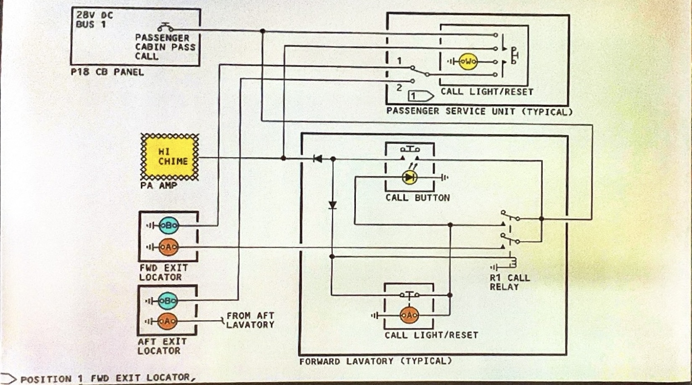
Passenger Lavatory Call Light 전기 회로도
Passenger Lavatory Call Light 동작 원리 상세 해설
· 전원은 동시에 두 갈래로 분기 — PSU 경로(위쪽)와 FWD Lavatory 경로(아래쪽)
· HI CHIME(PA AMP)도 이 전원선에 연결되어 있어, 회로가 활성화되면 차임이 울림
· 버튼을 누르면 R1 CALL RELAY 코일에 전원이 공급되어 Relay가 닫히고(latch), 손을 떼도 회로가 유지됨
· 동시에 PA AMP를 통해 HI CHIME(차임 소리)이 울림
· FWD + AFT Exit Locator 모두 같은 전원선에 연결되어 있어 동시에 Amber가 들어옴
· PSU에서도 Blue Light ON → 어느 좌석에서 호출했는지 표시
· 승무원이 이 버튼을 누르면 → 접점이 열리면서(Open) 전원 경로가 차단됨
· 전원이 끊기므로 연결된 모든 Amber Light가 동시에 꺼짐 — FWD Exit Locator, AFT Exit Locator 전부
· R1 Relay 코일 전원도 끊기므로 Relay도 열림(리셋) → 다음 호출 대기 상태로 복귀
· FWD LAV Call Btn을 누르면 → R1 Relay → FWD Exit Locator의 Amber가 켜짐
· AFT LAV Call Btn을 누르면 → AFT Exit Locator의 Amber가 켜짐 — FWD 회로와 완전히 별개 경로
· 즉 앞 화장실 호출과 뒤 화장실 호출은 서로 다른 Exit Locator를 켜므로 승무원이 어느 화장실인지 위치를 알 수 있음
Normal Open vs Normal Close — 핵심 비교
| 구분 | Call Button (N.O.) | Call Light/Reset (N.C.) |
|---|---|---|
| 평상시 상태 | 열려있음 (회로 차단) | 닫혀있음 (전원 통과 중) |
| 누를 때 | 닫힘 → 회로 연결 → Relay ON → 차임+Light ON | 열림 → 전원 차단 → 모든 Light OFF |
| 손 뗄 때 | 다시 열림 (but Relay가 회로 유지) | 다시 닫힘 (다음 호출 대기) |
| 역할 | 호출 시작 | 호출 종료 (리셋) |
Signs Lights 색상 정리 (암기)
| 색상 | 의미 | 동작 조건 | 끄는 방법 |
|---|---|---|---|
| Pink (분홍) | Crew 호출 (타 승무원/조종석 → 나) | 비행 갑판 또는 타 승무원 스테이션에서 호출 | 헤드셋을 들면 확인 가능 |
| Blue (파랑) | PAX 호출 (승객 → 승무원) | 승객이 PSU CALL 버튼 누름 | 승무원이 PSU 앞에서 Reset 누름 |
| Amber (주황) | LAV 호출 (화장실 → 승무원) | 승객이 화장실에서 Call 버튼 누름 | 화장실 Door 옆 Amber Light 누름 |
Service Compartment Lights (서비스 구획 조명)
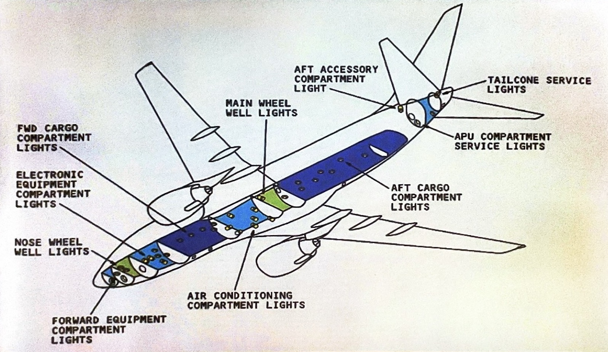
Service Light
서비스 구획 조명 목록 (B737 기준)
| 구획명 | 비고 |
|---|---|
| FWD Cargo Compartment Lights | 전방 화물칸 조명 |
| AFT Cargo Compartment Lights | 후방 화물칸 조명 |
| Electronic Equipment Compartment Lights | E&E Bay 조명 — Main Equipment (4개 랙) |
| "Nose Wheel" Well Lights | 전방 랜딩기어 휠 웰 조명 |
| "Main Wheel" Well Lights | 주 랜딩기어 휠 웰 조명 |
| Air Conditioning Compartment Lights | 에어컨 구획 조명 |
| "Forward Equipment" Compartment Lights | 전방 장비 구획 조명 |
| AFT Accessory Compartment Light | 후방 액세서리 구획 조명 |
| APU Compartment Service Lights | APU 구획 서비스 조명 |
| Tailcone Service Lights | 테일콘 서비스 조명 — 각종 linkage 연결부 있음 |
Cargo & Service Compartment Lights
· Cargo 조명: 화물 적재 시 내부 조명 제공
· 모든 서비스 조명은 정비 목적 — 지상 정비 작업 시 사용
Wheel Well Lights (휠 웰 조명)
· 별도의 S/W가 있음
· Nose Wheel Well Light: 전방 랜딩기어 수납 공간 조명
· Main Wheel Well Light: 주 랜딩기어 수납 공간 조명 — 각종 복잡한 linkage 있음
Electronic Equipment Compartment Lights (E&E Bay)
· Main Equipment 랙이 있는 E&E Bay 조명
· FWD EE Compartment Light Switch (E11) — 전방 스위치
· EE Compartment Light Switch (Service Panel) — 서비스 패널 스위치
· 스위치가 2개이므로 현장에서 조작 가능
· ∴ Service light는 조종실에 있는 게 아니라 각 요소들에 있음 — 다 정비를 위한 것
비상 조명 (Emergency Lighting)
비상 조명은 항공기 안전에 직결 — 정비를 안 하면 출발 불가
Emergency Lighting 트리 구조
EMERGENCY LIGHTING 5개 분류:
① Exit Signs — 출구 표시등
② Aisle Lights — 통로등
③ Floor Proximity Lights — 바닥 근접 조명
④ Slide Lights — 슬라이드 조명
⑤ Power Supplies — BAT Pack 전원 공급
비상 조명 전원 (Electrical Power)
· 각 비상 조명 배터리 팩 충전기는 28V DC BUS 1에서 전원을 공급받는다
· 배터리 팩을 충전하는 데는 약 90분이 소요 (Full Charge 필요)
· 충전 완료 시 팩은 최소 10분 분간 비상 조명을 제공
· 각 비상 조명이 켜지는 곳은 각 BAT Pack이 담당하는 부분이 다름
Emergency Exit Lights Switch (비상 출구 스위치)
AUTO 개념과 유사 — 어떤 조건이 발생되면 비상 light 켜짐
① EMER EXIT LIGHT SW (P5 조종실)
· 스위치 3단계: OFF / ARMED / ON
· ARMED = Normal Position (정상 위치) — AUTO 개념과 유사
· ON: BAT 방전됨 (배터리를 직접 소모)
· OFF: 비상등 꺼짐
· ARMED 상태에서 어떤 조건(전원 상실 등) 발생 시 → 비상 light 자동 켜짐
② EMERGENCY EXIT LIGHT SW (AFT Attendant Panel)
· AFP(AFT Panel)에 스위치 하나 더 있음
· 이건 ON/OFF만 — P5 조종실 스위치와 별개
· ON 하면 다 켜짐
· 조종실에 있는 거랑 별개 (승무원이 독립적으로 조작 가능)
비상 출구 조명 작동 로직 표 - 외우지마
| EMG Exit Lights | 28V DC BUS | Light SW (ATT Panel) | Light SW (P5) | Master Caution & Not Armed Lights | Battery Packs |
|---|---|---|---|---|---|
| ON | <12V | NORMAL | ARMED | OFF | DISCHARGE |
| ON | <12V | NORMAL | ON | ON | DISCHARGE |
| OFF | <12V | NORMAL | OFF | ON | CHARGE |
| ON | <12V | ON | OFF | ON | DISCHARGE |
| OFF | >12V | NORMAL | ARMED | OFF | CHARGE |
| ON | >12V | NORMAL | ON | ON | DISCHARGE |
| OFF | >12V | NORMAL | OFF | ON | CHARGE |
| ON | >12V | ON | ARMED | OFF | DISCHARGE |
| ON | >12V | ON | ON/OFF | ON | DISCHARGE |
ON하면 다 켜짐 / 12V 이상이어도 관계없이 정상
· 28V DC BUS <12V = 전원 결함 상태 → ARMED면 자동 DISCHARGE(비상등 ON)
· 충전은 OFF 상태(정상 전원 >12V, 스위치 NORMAL/OFF)일 때만 CHARGE
Exit Signs (출구 표시등)
Door Exit Signs
· Door 옆에 위치 — 어두울 때 엄청 밝음
· exit sign: 왼쪽, 오른쪽 어디 있는지 위치를 알려줌
Overwing Door Exit Signs
· B737인 경우: 날개쪽 작은 문 있음 → 날개 뒤에도 light 있어야 함
Cabin Emergency Lights (객실 비상 조명)
· 바닥을 비춤 (Floor Proximity Lighting)
· 바닥 근접 조명(좌석 장착형, 바닥 장착형)
· 바닥에 조명을 설치하여 PAX와 승무원에게 모든 출구의 방향을 안내
· Interior Emergency Light 항목:
— Aisle area light
— Ceiling area light
— Floor proximity light
— Exit sign
Escape Slide Lights (슬라이드 조명)
· 항공기 주변 출구 부근에 조명을 공급
· 구조: Integral Slide Lighting + Escape Slide Lighting 포함
Exterior Emergency Lights
· 승객 안전 탈출하라고 땅을 비춤 — Door 앞 땅을 비춰줌
· 조종실에서 켜는 게 아니라 exterior light 아님
· B737의 경우 날개위로 걸어가 Flap으로 쭉 내려감 → 날개 뒤에도 light 있어야 함
비상 조명 전체 핵심 암기
| 항목 | 핵심 내용 |
|---|---|
| 비상 조명 전원 | BAT Pack (자체 배터리) / 28V DC BUS 1에서 충전 |
| 충전 시간 | 약 90분 (Full Charge) |
| 작동 가능 시간 | 최소 10분 (승객 탈출 시간 확보) |
| 작동 전압 기준 | 28V DC BUS <12V → ARMED 상태면 자동 ON |
| 정상 스위치 위치 | ARMED (조종실 P5 패널) |
| AFT 패널 스위치 | ON/OFF만 — 조종실과 별개로 독립 작동 |
| Exit Signs | Door 옆 + Overwing / 방향(좌우) 표시 |
| Floor Proximity | 바닥 조명 — 출구 방향 안내 |
| Slide Lights | Exterior light / 탈출 슬라이드 + 탈출 경로 조명 |
| 정비 미실시 시 | 출발 불가 (비상 조명은 필수 장비) |